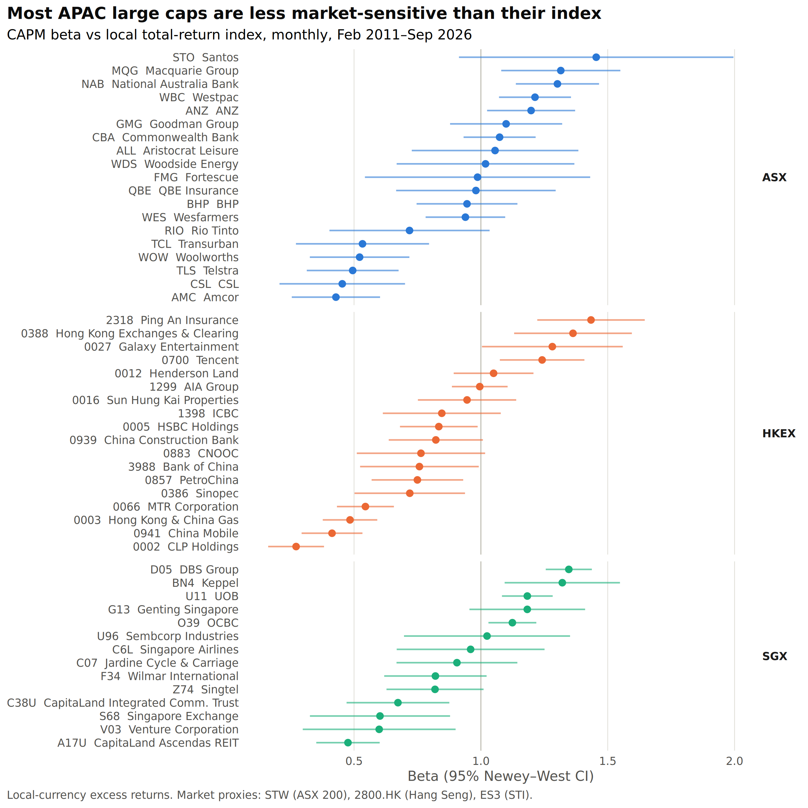
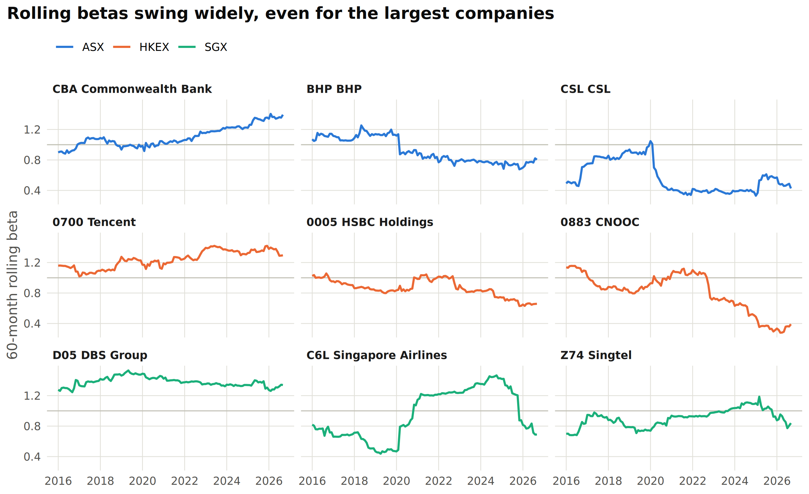

01 · CAPM and the market model across ASX, HKEX and SGX
How market-sensitive are APAC large caps, and are their betas stable enough to price capital with?
Author
Kai Marsh
Published
November 15, 2026
Setup: packages, shared functions, settings
suppressPackageStartupMessages({library(tidyverse); library(knitr)})source("../../R/models_linear.R")source("../../R/plots.R")data_dir <-"../../data/processed"nw_lag <-4# floor(4 (T/100)^(2/9)) for T = 188break_month <-as.Date("2020-01-01") # split for the stability testroll_win <-60# rolling-beta window (months)universe <-read_csv(file.path(data_dir, "universe.csv"), show_col_types =FALSE)ret <-read_csv(file.path(data_dir, "returns_monthly.csv"), show_col_types =FALSE)mkt <-read_csv(file.path(data_dir, "market_monthly.csv"), show_col_types =FALSE)rf <-read_csv(file.path(data_dir, "rf_monthly.csv"), show_col_types =FALSE)# Panel of excess returns: stock and market both in excess of the local ratepanel <- ret |>inner_join(universe, by =c("symbol"="ticker")) |>inner_join(mkt, by =c("market", "month")) |>inner_join(rf, by =c("market", "month")) |>mutate(ex = ret - rf, mex = mkt - rf,market =factor(market, levels =names(market_cols)))n_months <-n_distinct(panel$month)first_m <-format(min(panel$month), "%b %Y"); last_m <-format(max(panel$month), "%b %Y")n_stock <-table(universe$market)
Market model for every stock, estimated in matrix form per market
# For each market: Y (T x N) = X B + E, X = [1, market excess return].# One normal-equations solve gives all N alphas and betas; HAC errors per stock.fit_market <-function(d) { wide <- d |>select(month, symbol, ex) |>pivot_wider(names_from = symbol, values_from = ex) |>arrange(month) f <- d |>distinct(month, mex) |>arrange(month)stopifnot(identical(wide$month, f$month)) Y <-as.matrix(select(wide, -month)); X <-cbind(const =1, mex = f$mex)map_dfr(colnames(Y), function(s) { fit <-ols_matrix(Y[, s], X) V <-hac_vcov(fit, nw_lag) ct <-coef_table(fit, V)tibble(symbol = s, alpha = ct$estimate[1], se_alpha = ct$se[1], p_alpha = ct$p[1],beta = ct$estimate[2], se_beta = ct$se[2],r2 =1-sum(fit$resid^2) /sum((Y[, s] -mean(Y[, s]))^2),idio_vol =sqrt(12* fit$sigma2), total_vol =sqrt(12) *sd(Y[, s])) })}est <- panel |>group_by(market) |>group_modify(~fit_market(.x)) |>ungroup() |>left_join(universe |>select(ticker, name, sector), by =c("symbol"="ticker")) |>mutate(ticker =sub("\\.(AX|HK|SI)$", "", symbol),beta_lo = beta -1.96* se_beta, beta_hi = beta +1.96* se_beta,beta_blume =2/3* beta +1/3, # Blume (1971) adjustment toward 1p_alpha_bh =p.adjust(p_alpha, "BH")) # false-discovery-rate correction# Cross-check: the matrix estimator reproduces lm() for one stockchk <- panel |>filter(symbol =="0700.HK")stopifnot(isTRUE(all.equal(unname(coef(lm(ex ~ mex, chk))[2]), est$beta[est$symbol =="0700.HK"], tolerance =1e-10)))mkt_summary <- est |>group_by(market) |>summarise(n =n(), median_beta =median(beta), min_beta =min(beta), max_beta =max(beta),median_r2 =median(r2), share_beta_lt1 =mean(beta <1), .groups ="drop")n_alpha_raw <-sum(est$p_alpha <0.05); n_alpha_bh <-sum(est$p_alpha_bh <0.05)
Beta stability: split-sample test with HAC errors (general linear hypothesis)
# ex = a + b * mex + d0 * post + d1 * (mex x post) + e; H0: d1 = 0 (beta unchanged)stab <- panel |>group_by(market, symbol) |>group_modify(function(d, key) { post <-as.numeric(d$month >= break_month) X <-cbind(const =1, mex = d$mex, post = post, mex_post = d$mex * post) fit <-ols_matrix(d$ex, X) V <-hac_vcov(fit, nw_lag) lh <-linear_hypothesis(fit, rbind(c(0, 0, 0, 1)), V = V)tibble(beta_pre = fit$coef["mex"], beta_post = fit$coef["mex"] + fit$coef["mex_post"],d_beta = fit$coef["mex_post"], p_change = lh["p"])}) |>ungroup() |>mutate(p_change_bh =p.adjust(p_change, "BH"),ticker =sub("\\.(AX|HK|SI)$", "", symbol))n_shift_bh <-sum(stab$p_change_bh <0.05)shift_up <- stab |>filter(p_change_bh <0.05, d_beta >0) |>arrange(desc(d_beta))shift_dn <- stab |>filter(p_change_bh <0.05, d_beta <0) |>arrange(d_beta)med_abs_shift <-median(abs(stab$d_beta))rank_cor <-cor(stab$beta_pre, stab$beta_post, method ="spearman")# Sector groups referred to in the textstab <- stab |>left_join(universe |>select(ticker, sector), by =c("symbol"="ticker"))cn_banks <- stab |>filter(symbol %in%c("0939.HK", "1398.HK", "3988.HK"))cn_banks_pre <-mean(cn_banks$beta_pre); cn_banks_post <-mean(cn_banks$beta_post)cn_full <-mean(est$beta[est$symbol %in% cn_banks$symbol])res <- stab |>filter(sector %in%c("Materials", "Energy"), symbol !="AMC.AX") # Amcor is packagingn_res <-nrow(res); n_res_down <-sum(res$d_beta <0)au_banks <- stab |>filter(market =="ASX", sector =="Banks")stopifnot(n_res_down == n_res, all(au_banks$d_beta >0), nrow(au_banks) ==4) # text claims "all"# Rolling 60-month betasroll <- panel |>group_by(symbol) |>arrange(month) |>group_modify(function(d, key) {if (nrow(d) < roll_win) return(tibble())map_dfr(roll_win:nrow(d), function(k) { w <- d[(k - roll_win +1):k, ]tibble(month = d$month[k], beta =cov(w$ex, w$mex) /var(w$mex)) })}) |>ungroup() |>left_join(universe, by =c("symbol"="ticker"))roll_range <- roll |>group_by(symbol) |>summarise(range =max(beta) -min(beta))
TipAnswer first
Most APAC large caps move less than their market. 31 of 51 stocks have a beta below 1. The median beta is 0.99 on the ASX, 0.83 in Hong Kong and 0.93 in Singapore. Financials (banks, insurers, exchanges) sit above 1. Utilities, telecoms and health care sit well below, and so, perhaps surprisingly, do most resource and energy stocks.
The market explains only part of the risk. The median R² is 26% on the ASX, 47% in Hong Kong and 34% in Singapore. Most single-stock volatility is idiosyncratic, so beta describes only one slice of risk.
Betas shifted after 2020, by sector. China’s three big state banks decoupled from the Hang Seng (beta roughly 1.23 → 0.48). All 8 resource and energy names became less market-sensitive, and all four Australian major banks became more so. The median stock’s beta moved by 0.28 between 2011–19 and 2020–26. For 9 of 51 stocks the change survives a false-discovery-rate correction.
So what: a cost-of-equity estimate should use a shrunk (Blume-adjusted) beta, quote a range, and say which window it came from. For the Chinese state banks, the full-sample beta is about 69% higher than the 2020–26 one. The betas here feed the WACC in Module 06.
Question
The CAPM prices a stock’s expected excess return off a single number, its beta against the market:
This module estimates that market model for large caps on the three main APAC exchanges. It asks three questions: how large and how precise the betas are, how much of each stock’s risk the market explains, and whether the betas stay put. Whether beta is actually priced in the cross-section of returns is tested in Module 03.
Data
Show code
rf_raw <-read_csv(file.path(data_dir, "rf_rates_raw.csv"), show_col_types =FALSE)mkt_stats <- panel |>distinct(market, month, mex, rf) |>group_by(market) |>summarise(`Market excess return (p.a.)`=pct(12*mean(mex)),`Market volatility (p.a.)`=pct(sqrt(12) *sd(mex)),`Mean risk-free (p.a.)`=pct(12*mean(rf)), .groups ="drop")tibble(market =factor(names(market_cols), levels =names(market_cols)),Stocks =as.integer(n_stock[names(market_cols)]),`Market proxy`=c("SPDR S&P/ASX 200 ETF (STW)", "Tracker Fund of HK, Hang Seng (2800)","SPDR Straits Times Index ETF (ES3)"),`Risk-free rate`=c("1-month bank bills (RBA F1)", "1-month HIBOR (HKMA)","SORA (MAS, via SingStat)")) |>left_join(mkt_stats, by ="market") |>rename(Market = market) |>kable(align ="lrllrrr")
Table 1: Sample by market. Returns are monthly, in local currency, in excess of the local risk-free rate.
Market
Stocks
Market proxy
Risk-free rate
Market excess return (p.a.)
Market volatility (p.a.)
Mean risk-free (p.a.)
ASX
19
SPDR S&P/ASX 200 ETF (STW)
1-month bank bills (RBA F1)
5.7%
12.9%
2.5%
HKEX
18
Tracker Fund of HK, Hang Seng (2800)
1-month HIBOR (HKMA)
3.8%
19.9%
1.4%
SGX
14
SPDR Straits Times Index ETF (ES3)
SORA (MAS, via SingStat)
6.6%
12.9%
1.1%
Stocks: 51 large caps (19 ASX, 18 HKEX, 14 SGX) across banks, other financials, resources, energy, property, utilities, telecoms, consumer and technology. Each has a complete monthly history from Feb 2011 to Sep 2026 (188 months). Returns are total returns from Yahoo Finance adjusted closes.
Market proxies: index-tracking ETFs rather than the price indices, because their adjusted prices include dividends. A price index would understate the market return by the dividend yield (about 3–4% a year on these markets).
Risk-free rates: one short rate per market, in the same currency as the returns. The rate published at the end of month t−1 is the risk-free return for month t. Hong Kong rates track US rates because of the HKD peg.
Exclusions and data checks: Hang Seng Bank (taken private by HSBC) has no price history, and Thai Beverage was dropped because Yahoo mis-adjusts its baht-denominated dividends (it shows +60% to +210% “returns” in dividend months). All remaining monthly moves above 35% were checked against known events.
Method
For each market, the excess returns of its N stocks are stacked into a T × N matrix and estimated in one step,
Standard errors are Newey–West (Bartlett kernel, 4 lags), \(\widehat{\operatorname{Var}}(\hat\beta) = (\mathbf{X}'\mathbf{X})^{-1}\hat{\mathbf{S}}(\mathbf{X}'\mathbf{X})^{-1}\), allowing for heteroskedasticity and autocorrelation. The estimators are hand-written in R/models_linear.R and unit-tested against lm() and sandwich::NeweyWest to 10 decimal places (tests/).
Multiple testing: with 51 stocks, about 3 would show “significant” alphas or beta shifts at 5% by chance alone. p-values are therefore also reported after a Benjamini–Hochberg false-discovery-rate correction.
Stability is tested with a dummy-interaction model, \(r_i - r_f = a + b\,x + d_0\,\text{post} + d_1\,(x \times \text{post}) + \varepsilon\), where \(x\) is the market excess return and post = 1 from January 2020. The test is the general linear hypothesis \(H_0\!: d_1 = 0\) with HAC covariance. Rolling 60-month betas show the path between the two halves.
Results
Betas: mostly below 1, with clear sector patterns
Show code
p_beta <- est |>mutate(label =paste0(ticker, " ", name), label =fct_reorder(label, beta)) |>ggplot(aes(beta, label, colour = market)) +geom_vline(xintercept =1, colour ="#c3c2b7", linewidth =0.4) +geom_errorbarh(aes(xmin = beta_lo, xmax = beta_hi), height =0, linewidth =0.6, alpha =0.6) +geom_point(size =2.2) +facet_grid(market ~ ., scales ="free_y", space ="free_y") +scale_colour_manual(values = market_cols, guide ="none") +labs(title ="Most APAC large caps are less market-sensitive than their index",subtitle =sprintf("CAPM beta vs local total-return index, monthly, %s–%s", first_m, last_m),x ="Beta (95% Newey–West CI)", y =NULL,caption ="Local-currency excess returns. Market proxies: STW (ASX 200), 2800.HK (Hang Seng), ES3 (STI).") +theme_report() +theme(panel.grid.major.y =element_blank(), strip.text.y =element_text(angle =0, face ="bold"))dir.create("figures", showWarnings =FALSE)ggsave("figures/key_chart.png", p_beta, width =9, height =9, dpi =200, bg ="white")p_beta

Figure 1: Market-model beta with 95% Newey–West confidence interval, by market. Grey line: β = 1.
Table 2: Median beta and median R² by sector (all three markets pooled).
Sector
Stocks
Median beta
Median R²
Median idiosyncratic vol (p.a.)
Financials (other)
6
1.16
57%
18%
Banks
11
1.12
56%
13%
Consumer
6
1.00
33%
18%
Real estate
5
0.95
39%
17%
Technology
2
0.92
36%
21%
Industrials
5
0.91
37%
16%
Materials
4
0.83
14%
21%
Energy
5
0.76
28%
24%
Telecoms & utilities
6
0.49
22%
15%
Health care
1
0.45
6%
23%
Financials have the highest betas: banks, insurers and exchange operators, whose earnings scale with market activity and which make up a large share of each index. Utilities, telecoms and health care, with regulated or defensive cash flows, have the lowest (CLP Holdings: 0.27; CSL: 0.45).
Resources and energy are the interesting case. Their betas are mostly below 1 and their R² is low (median 26%), even though BHP and RIO are among the ASX’s largest stocks. Their returns are driven by commodity prices, which only partly move with the local market. Module 08 models that oil and iron-ore exposure directly.
Alphas: indistinguishable from zero once multiple testing is respected
Table 3: Stocks with the largest absolute alphas. Alpha is annualised; p-values use Newey–West errors, before and after Benjamini–Hochberg correction across all stocks.
Stock
Market
Alpha (p.a.)
SE (p.a.)
p
p (BH)
D05 DBS Group
SGX
7.8%
2.4%
0.001
0.055
0700 Tencent
HKEX
15.2%
5.5%
0.007
0.119
ALL Aristocrat Leisure
ASX
16.6%
6.1%
0.007
0.119
O39 OCBC
SGX
4.9%
2.1%
0.019
0.193
WES Wesfarmers
ASX
6.9%
3.0%
0.022
0.193
G13 Genting Singapore
SGX
-10.8%
4.8%
0.024
0.193
GMG Goodman Group
ASX
9.9%
4.5%
0.029
0.193
1299 AIA Group
HKEX
7.5%
3.4%
0.030
0.193
9 of 51 stocks have an alpha significant at 5% on its own. After the false-discovery-rate correction, 0 remain. The typical standard error on an annual alpha is about 4%, so an alpha would need to be roughly ±8% a year to register. “No significant alpha” here mostly means “15 years of monthly data cannot tell”. The joint test of all alphas, together with the multi-factor alternatives, is in Module 03.
Stability: betas drift, and sometimes jump
Show code
pick <-c("CBA.AX", "BHP.AX", "CSL.AX", "0700.HK", "0005.HK", "0883.HK", "D05.SI", "C6L.SI", "Z74.SI")roll |>filter(symbol %in% pick) |>mutate(lab =paste0(sub("\\.(AX|HK|SI)$", "", symbol), " ", name),lab =factor(lab, levels =unique(lab[order(match(symbol, pick))]))) |>ggplot(aes(month, beta, colour = market)) +geom_hline(yintercept =1, colour ="#c3c2b7", linewidth =0.4) +geom_line(linewidth =0.8) +facet_wrap(~ lab, ncol =3) +scale_colour_manual(values = market_cols) +labs(title ="Rolling betas swing widely, even for the largest companies",x =NULL, y ="60-month rolling beta") +theme_report()

Figure 2: Rolling 60-month betas for selected stocks. Each point uses the previous five years of monthly data. Sharp steps occur when a single extreme month (such as March 2020) enters or leaves the window.
Table 4: Stocks whose beta changed significantly between 2011–19 and 2020–26 (Newey–West Wald test, Benjamini–Hochberg adjusted p < 0.05).
Stock
Market
Beta 2011–19
Beta 2020–26
Change
p (BH)
C6L Singapore Airlines
SGX
0.69
1.26
+0.58
0.046
C38U CapitaLand Integrated Comm. Trust
SGX
0.49
0.90
+0.40
0.046
CBA Commonwealth Bank
ASX
0.89
1.24
+0.35
0.049
1398 ICBC
HKEX
1.30
0.49
-0.81
0.000
3988 Bank of China
HKEX
1.20
0.41
-0.79
0.000
0939 China Construction Bank
HKEX
1.19
0.54
-0.66
0.000
RIO Rio Tinto
ASX
1.04
0.43
-0.61
0.046
BN4 Keppel
SGX
1.58
1.03
-0.55
0.022
0883 CNOOC
HKEX
1.05
0.54
-0.51
0.046
The shifts cluster by sector, which suggests real economic change rather than noise:
Chinese state banks (CCB, ICBC, Bank of China) went from moving more than the Hang Seng to moving about half as much. A plausible reading: after 2020 the index was driven by the Chinese tech and property sell-offs, while the state banks traded as policy-supported, high-dividend stocks.
Resources and energy: all 8 such names have lower betas in 2020–26. Commodity prices (the 2021–22 iron-ore and energy spikes) drove their returns more than the domestic market did.
Australian banks all became more market-sensitive. Rate-cycle news after COVID moved the whole ASX, and the banks are among its most rate-sensitive large caps.
The ranking of stocks by beta is only moderately persistent (Spearman correlation 0.49 between the two halves). The median absolute change is 0.28, and the median stock’s 60-month rolling beta ranged over 0.62 across the sample. At a 6% market risk premium, a 0.3 change in beta moves the CAPM cost of equity by 1.8 percentage points. In a perpetuity valuation with 3% growth and a 9% discount rate, that lowers the value by almost a quarter (from 1/0.06 to 1/0.078 times the cash flow).
Simple vs full specification: does the set-up matter?
An earlier version of this analysis used a quick specification: the market was an equal-weighted average of the sample stocks themselves (leave-one-out, so no stock is regressed on itself), and the risk-free rate was a constant 2.4% a year. Re-running that simple model on the same 51 stocks shows what the fuller set-up (a cap-weighted total-return index and published local rates) changes.
Market-model estimates under the simple and full specifications, same 51 stocks and months.
Market
Median beta, simple
Median beta, full
Median R², simple
Median R², full
Beta correlation
Largest beta gap
ASX
0.92
0.99
25%
26%
0.97
CSL (+0.20)
HKEX
0.96
0.83
43%
47%
0.96
0883 (-0.19)
SGX
0.87
0.93
31%
34%
0.97
D05 (+0.21)
For betas, the simple model holds up well. The two specifications give betas correlated at 0.94, and no stock’s beta moves by more than 0.21, in either direction. The bigger difference is in alphas. A constant risk-free rate misstates each month’s excess return when actual rates ranged from near zero (2020–21) to over 5% (2023), and that shifts alphas by a median of 3.3% a year. The simple model is fine for ranking stocks by market sensitivity. It is not fine for judging whether a stock earned more than the CAPM required, which is the question Module 03 asks.
Table 5: Raw and Blume-adjusted betas for the names valued in later modules. The Blume adjustment, β_adj = ⅔β + ⅓, shrinks noisy estimates toward the cross-sectional mean of about 1.
Stock
Full-sample beta
95% CI
2020–26 beta
Blume-adjusted
0700 Tencent
1.24
1.07–1.41
1.24
1.16
0939 China Construction Bank
0.82
0.64–1.01
0.54
0.88
1398 ICBC
0.85
0.61–1.08
0.49
0.90
3988 Bank of China
0.76
0.52–0.99
0.41
0.84
0005 HSBC Holdings
0.83
0.68–0.99
0.77
0.89
D05 DBS Group
1.35
1.26–1.44
1.33
1.23
O39 OCBC
1.12
1.03–1.22
1.11
1.08
U11 UOB
1.18
1.08–1.28
1.13
1.12
0883 CNOOC
0.76
0.51–1.02
0.54
0.84
0857 PetroChina
0.75
0.57–0.93
0.62
0.83
0386 Sinopec
0.72
0.50–0.94
0.57
0.81
WDS Woodside Energy
1.02
0.67–1.37
0.83
1.01
STO Santos
1.45
0.91–2.00
1.32
1.30
Limitations
Survivorship. These are today’s large caps, chosen with hindsight. Firms that shrank, were taken over or delisted (Hang Seng Bank is one) are missing, which biases average returns, and so alphas, upward. Betas are less affected.
Market proxies. Each index ETF tracks a cap-weighted index, which is the textbook choice. But the Hang Seng is concentrated in financials and Chinese tech, so Hong Kong betas are relative to that particular mix. ETF fees (about 0.05–0.10% a year) slightly lower the measured market return.
Local currency. Each market is analysed in its own currency against its own risk-free rate, which is right for a local investor. An AUD-based investor holding HK or SG stocks also bears currency risk, which is not modelled here.
Yahoo data. Adjusted closes can be wrong around corporate actions (Thai Beverage was excluded for this). The remaining data passed a screen for implausible moves, but this is not a vendor-grade database.
References
Blume, M. E. (1971). On the assessment of risk. Journal of Finance, 26(1), 1–10.
Benjamini, Y., & Hochberg, Y. (1995). Controlling the false discovery rate. Journal of the Royal Statistical Society B, 57(1), 289–300.
Newey, W. K., & West, K. D. (1987). A simple, positive semi-definite, heteroskedasticity and autocorrelation consistent covariance matrix. Econometrica, 55(3), 703–708.
Sharpe, W. F. (1964). Capital asset prices: A theory of market equilibrium under conditions of risk. Journal of Finance, 19(3), 425–442.